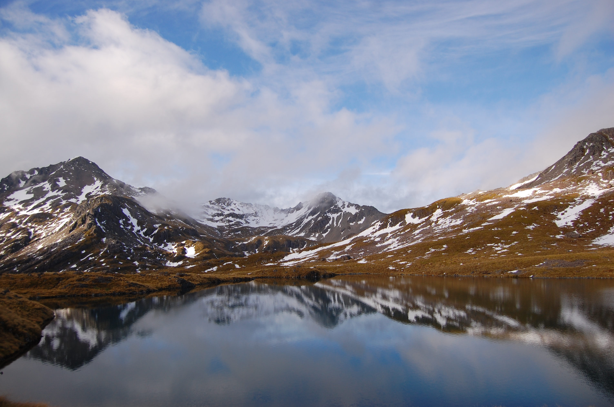

Angelus Hut
The alpine tarn of Lake Angelus, nestled in a glacial basin high above Lakes Rotoroa and Rotoiti, is one of the classic tramps in the Nelson Lakes National Park. This lake, at 1600 m above sea level, can be reached by a number of routes, some more exposed to the elements than others. The Robert Ridge route is the most popular approach to the lake, and justifiably so, but should only be tackled in good weather as the ridge is very exposed for several hours along its length, with no easy escape route if conditions turn nasty. The lake and nearby spacious hut can be visited in an ordinary weekend, although an extra day spent among the rocky tops of the range—possibly including a scramble up Mt Angelus—would be a memorable addition to this tramp.

Back